2020 Iditarod Mushers Scratched at the Highest Rate in 40 Years
The 2020 Iditarod Trail Sled Dog race will be remembered as the year the coronavirus upended the final days of the race and saw checkpoints lock down as the race finished in Nome. But it will also go down as of the most unforgiving for mushers: of the 57 mushers who began the race in Willow, 22 scratched and went home early.
2020’s scratch rate of 38.5% ranks fourth highest in 48 years of racing. The 1974 record for the most scratches by percertage of field has stood for 46 years with its 40.9% scratch rate. You have to go back to 1980 to see more of the field scratching. 2020 is shown in orange below.
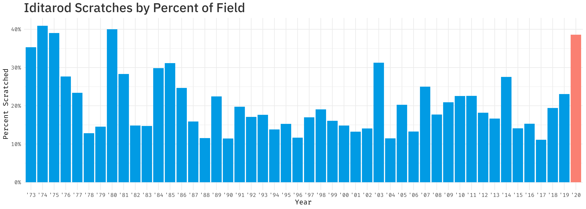
It’s become a rarity to see such widespread scratches. Only twice in the the last 36 years has more than 25% of the field scratched. More of the race field finished in the first race in 1973 (35.3% scratch rate)—when many thought finishing a 1,000-mile race was impossible—than did in 2020.
Below, each year is shown in order of highest percentage of the field who scratched. 2020 is shown in orange.
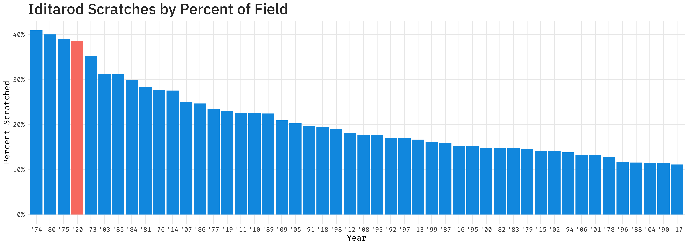
2020 was close to setting the record for scratches by percentage: if two additional mushers would have left, 2020 would have claimed the record for the largest percentage of scratches. Since racing began in 1973, 20% of teams on average scratch each year, and the median is only 17%. And it’s not simply a fluke of small numbers. While 2020’s field is small by historic standards, there have been 14 races that have had fewer mushers start.
Highlighed in orange below is the year with the highest percent of scratches (1974) and 2020. The two years with the lowest scratching percentages (2017 and 1990) are highlighted in dark blue.
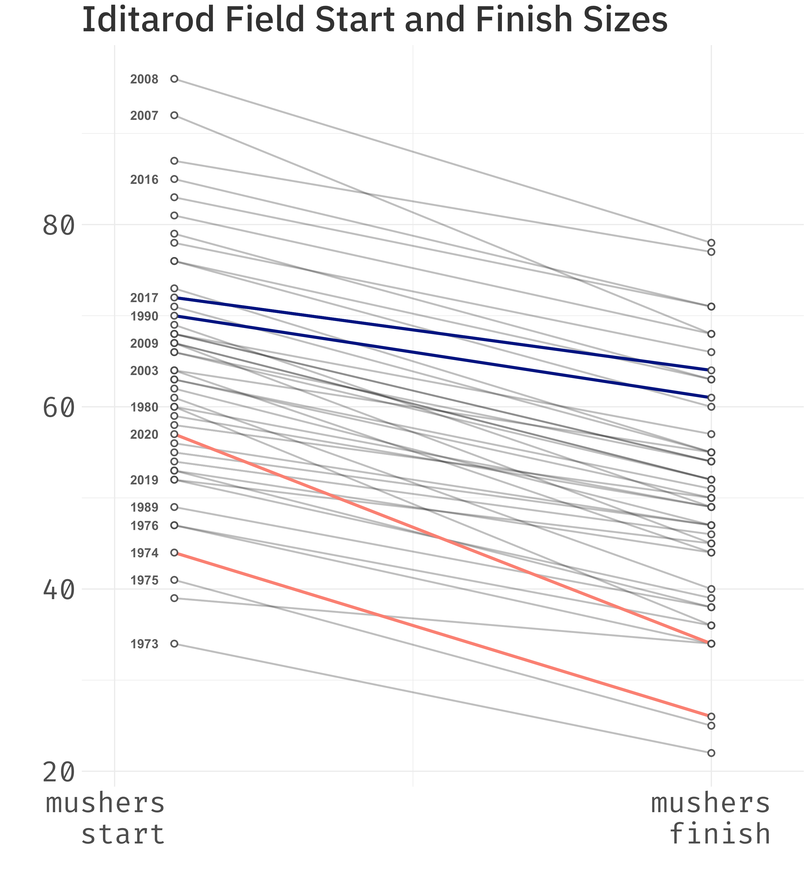
Since 2006, the Iditarod has published checkpoint-by-checkpoint data for each race. With this information, we can learn about the portions of the trail that see mushers scratch and where they have less trouble. There is not detailed infomation online for races prior to 2006. Below are the cumulative scratches of the 15 races between 2006 and 2020, plotted by the race mileage.
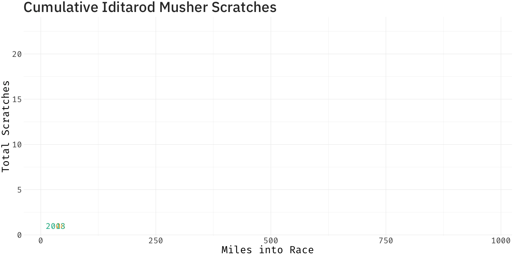
and a static version:
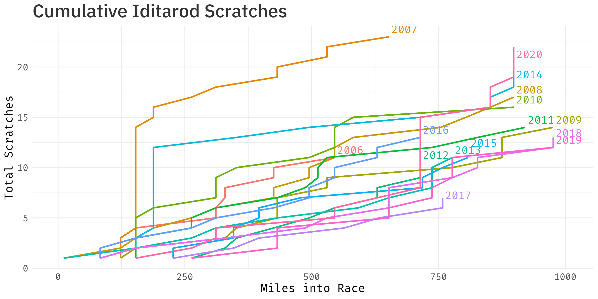
When you normalize for the size of the field and show a percentage instead of raw numbers, 2020’s historic scratch rate becomes clear. Shown here are the scratches as a percentage of the total field.
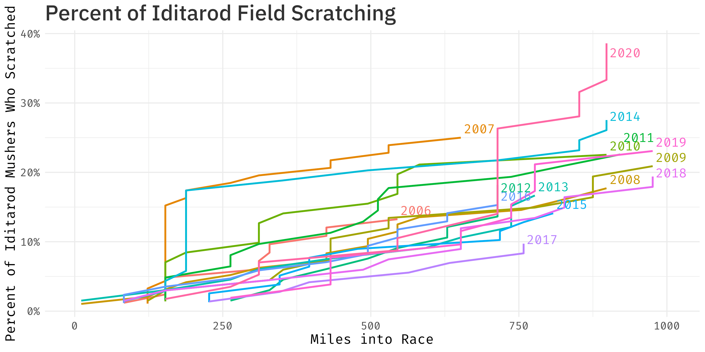
These 15 years of racing have 230 scratches across them. Because the race switches between a southern and northern route every other year, it’s a little tough to compare checkpoint statistics perfecly. And two of these years (2015 and 2017) saw the race started moved to Fairbanks and run on a completely different first 500 miles than the traditional trail.
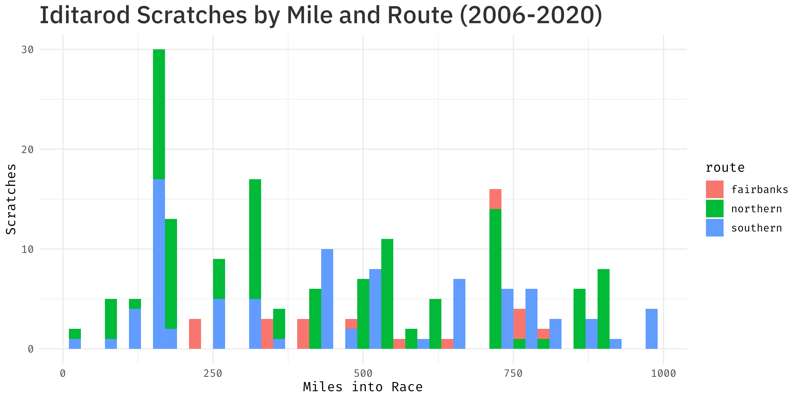
Despite the imperfect comparison, Rainy Pass and Unalakleet both see large numbers of mushers drop each year.
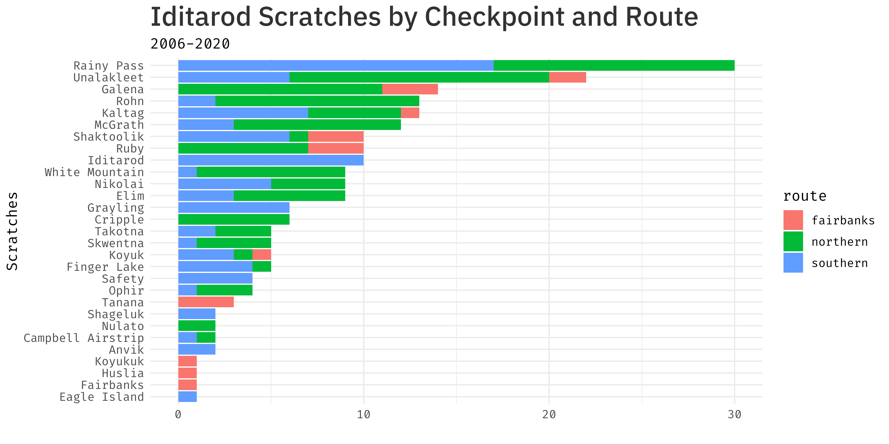
When we break down scratches for each year, we can start to see a few patterns emerge of when and where mushers leave thee race. In 2007 and 2014 it was in the first couple hundred miles in the mountains: the scratchtes jump up quickly with the bulk of scratches at Rainy Pass. 2020 was a year with more late-mileage scratches.
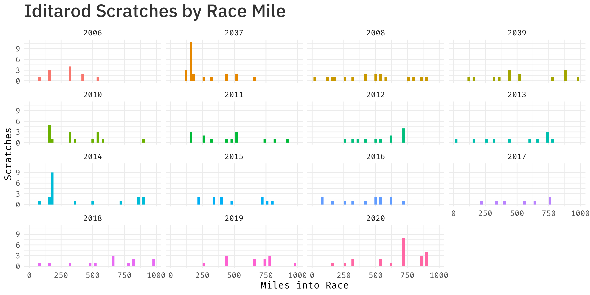
I’ve animated the cumulative scratches for these years.
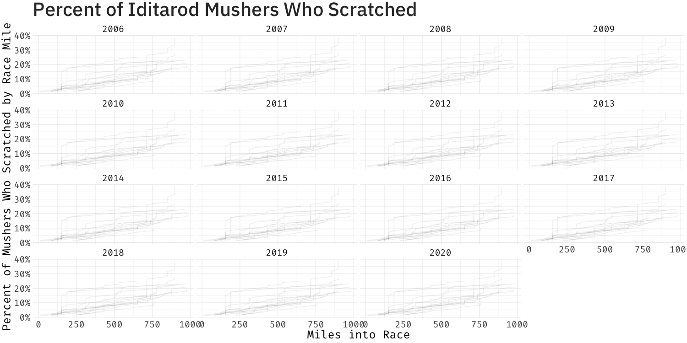
And the same information in a static version:
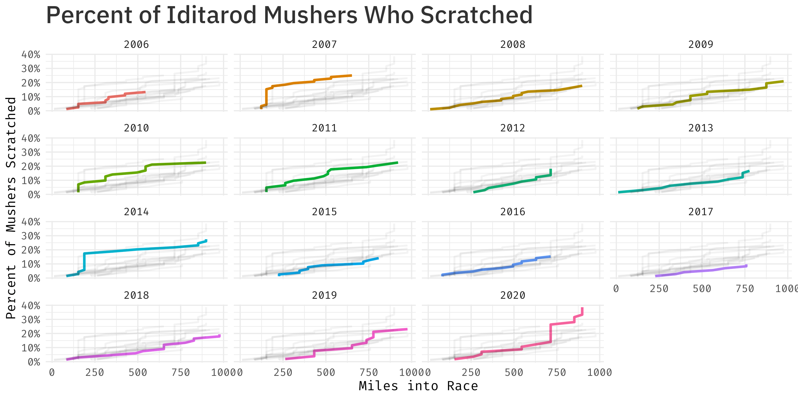
And finally, because this really could have been a table, here are the top 10 races with the most scratches by percentage of field.
Top 10 Iditarod Races by Percent of Field Scratched
About:
The data used in this comes from the Iditarod. Detailed scratch information is available going back to 2006.
The code and raw data are available on this GitHub repo.
Analysis and plots done in R with ggplot2. The animation is powered by gganimate.